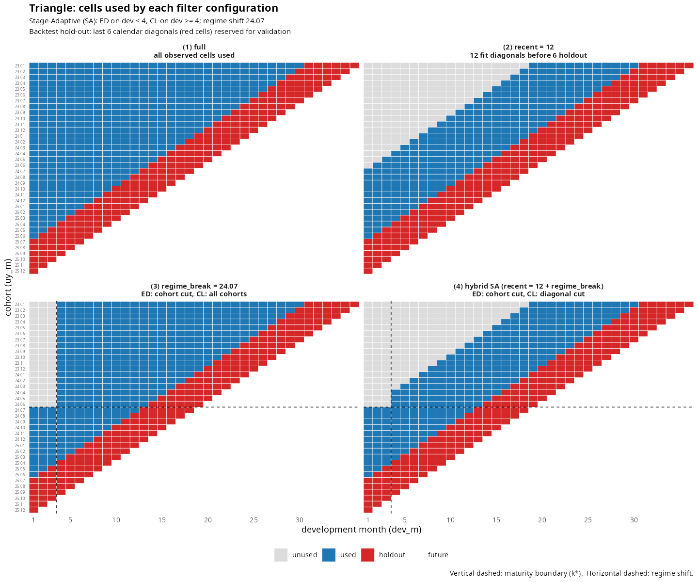

Regime change filter: hybrid cohort + diagonal cut for fit_*
Source:vignettes/regime-change-filter.Rmd
regime-change-filter.RmdMotivation
When a long-term health portfolio undergoes a rate revision, coverage
restructure, or underwriting overhaul, cohorts after that event behave
differently from earlier ones. Fitting chain ladder on the full triangle
lets old-cohort link factors leak into the new-cohort projections, which
shows up as a monotone drift across diag_summary in
backtest().
The recent = N argument suppresses some of this drift,
but a calendar-diagonal cut is symmetric across both axes — it discards
older cohorts’ young-dev cells too, where the ED region was already
stable. The natural fix is asymmetric:
- Pre-maturity (ED region): horizontal cut — keep only post-change cohorts.
-
Post-maturity (CL region): diagonal cut — keep only
the recent
Ncalendar diagonals.
loss_regime (and its premium-side sibling
premium_regime) implements that split.
Two-axis asymmetry
| Axis | Number of changes | Source |
|---|---|---|
| x (maturity, ED → CL) | exactly one per group | fit_ata$maturity |
| y (regime change) | zero or many per group | detect_regime$changes |
The maturity point
is a single internal switch produced by detect_maturity().
Regime changes are exogenous events — there can be none, one, or
several. When a Regime object carries multiple changes, the
treatment slot decides how downstream fits use them:
-
treatment = "latest_only"(default): collapse to the most recent change and drop all pre-latest cohorts. A single pooled factor is estimated over the surviving (post-latest) cohorts. Stable when the post-change window has accumulated enough cohorts and earlier regimes are not informative for the current one. -
treatment = "segment_wise": preserve every change. Each segment (consecutive cohorts between adjacent changes) gets its own factor estimate, and each cohort is projected with its own segment’s factor. Use this when older regimes still need their own development tail — e.g., multi-regime + long-tail data where the latest regime hasn’t yet observed late-dev development.
Pick the treatment when constructing the Regime:
# Latest-only (default — drop pre-latest cohorts)
regime_at(change = c("2022-01-01", "2024-04-01"))
# Segment-wise (each segment gets its own factor)
regime_at(change = c("2022-01-01", "2024-04-01"),
treatment = "segment_wise")
detect_regime(tri, treatment = "segment_wise")API
fit_lr() takes two role-specific regime arguments —
loss_regime (loss-side filter) and
premium_regime (premium-side filter; defaults to
loss_regime). fit_loss() /
fit_premium() take a single regime argument.
backtest() mirrors fit_lr with
loss_regime / premium_regime. All four accept
the same input types:
| Input | Behaviour |
|---|---|
NULL (default) |
no filtering — backwards compatible |
Regime object |
output of detect_regime() or
regime_at()
|
"auto" sentinel |
calls detect_regime() internally on the triangle |
function(tri) -> Regime |
closure that returns a Regime from a triangle |
Raw Date / character / vector input is no longer
accepted — wrap it in regime_at() first to make the change
explicit:
library(lossratio)
data(experience)
tri_sur <- build_triangle(
experience[coverage == "SUR"],
groups = "coverage",
cohort = "uy_m",
calendar = "cy_m",
loss = "loss_incr",
premium = "premium_incr"
)
# Manual change date via regime_at() — wrap a literal date in a Regime
fit_lr(tri_sur, method = "sa", recent = 18L,
loss_regime = regime_at(change = "2024-07-01"))
# Regime object from detect_regime() directly
reg <- detect_regime(tri_sur)
fit_lr(tri_sur, method = "sa", recent = 18L, loss_regime = reg)
# "auto" sentinel — detect_regime() is run internally
fit_lr(tri_sur, method = "sa", recent = 18L, loss_regime = "auto")
# Closure — defers detection until the fit sees the (filtered) triangle
fit_lr(tri_sur, method = "sa", recent = 18L,
loss_regime = function(tri) detect_regime(tri))In simple modes (fit_lr(method ∈ {"ed","cl"})) the same
argument acts as a plain cohort cut. The workers (fit_ata,
fit_ed, fit_cl, fit_intensity)
expose the same 4-type regime argument (NULL /
Regime / "auto" / closure). Wrap a
domain-knowledge date with regime_at(change = "2024-07-01")
to construct a Regime without running detection.
SA-mode hybrid behaviour
The hybrid split activates only for
fit_lr(method = "sa") with both loss_regime
and recent:
- dev ≤ — ED region: post-change cohorts only.
- dev >
— CL region: latest
recentdiagonals only (full triangle ifrecent = NULL).
The maturity point itself is found in a two-pass procedure: first on the raw triangle (so noisy post-change windows do not destabilise ), then the hybrid filter is applied to the actual fit using the fixed .
plot_triangle(view = "usage") visualises which cells
each filter configuration feeds to fit_lr:
plot_triangle(tri_sur, view = "usage", holdout = 6L) # full
plot_triangle(tri_sur, view = "usage", recent = 12L, holdout = 6L) # recent
plot_triangle(tri_sur, view = "usage", regime = "2024-07-01", holdout = 6L) # change
plot_triangle(tri_sur, view = "usage", recent = 12L,
regime = "2024-07-01", holdout = 6L) # hybrid
The hybrid panel shows the dev-axis split that SA mode applies: a cohort cut on the ED side and a calendar diagonal cut on the CL side, joined at .
Case study — SUR cohort
The bundled experience dataset embeds a synthetic
2024-04 regime change in the SUR coverage. Backtests on the same
triangle with four variants:
reg <- detect_regime(tri_sur)
bt_full <- backtest(tri_sur, holdout = 6L)
bt_recent <- backtest(tri_sur, holdout = 6L, recent = 18L)
bt_change <- backtest(tri_sur, holdout = 6L,
loss_regime = reg)
bt_hybrid <- backtest(tri_sur, holdout = 6L, recent = 18L,
loss_regime = reg)Reproduced from dev/regime_backtest_hybrid.R:
| Variant | drift (cal30 − cal25) | overall mean |
|---|---|---|
| full | +4.50pp | -1.25% |
| recent = 18 | +2.03pp | -3.45% |
| loss_regime + recent = 18 | -0.69pp | +0.03% |
Two columns summarise the A/E Error = actual / proj − 1
(positive = under-projection) measured on the held-out diagonals:
- drift (cal30 − cal25): A/E Error aggregated by calendar diagonal, then the (latest − earliest) difference. Captures whether the prediction error is monotonically changing across the hold-out window — the signature of a regime change that the static model has not absorbed.
- overall mean: cell-level mean A/E Error across all held-out cells — the model’s directional bias.
Drift collapses from +4.50pp under full to -0.69pp under
the hybrid filter; the overall mean returns to ~0. The hybrid joins two
axis cuts at
:
a cohort cut on the ED side (dev ≤ k*) and a calendar diagonal cut on
the CL side (dev > k*).
Multi-group handling
detect_regime() assumes a single-group triangle. For a
portfolio with multiple coverage groups, call it per
group:
fits <- lapply(unique(exp$coverage), function(g) {
tri_g <- build_triangle(
experience[coverage == g],
groups = "coverage",
cohort = "uy_m",
calendar = "cy_m",
loss = "loss_incr",
premium = "premium_incr"
)
reg_g <- detect_regime(tri_g)
fit_lr(tri_g, method = "sa", recent = 18L,
loss_regime = reg_g)
})A future extension may accept
loss_regime = list(SUR = regime_at(...), CAN = regime_at(...)).
Today only NULL / Regime / "auto"
/ closure are supported.
Limitations
If the post-change window is too short (small n_post),
the ED intensity
and link factors
become noisy. A practical threshold is n_post ≳ 6. Below
that, prefer recent alone, or wait for credibility-weighted
blending of pre- and post-change factors (planned).
Note also that loss_regime / premium_regime
only filter the data feeding link factor estimation. Once the factors
are fixed, all cohorts share them, so pre-change ultimates inherit the
post-change dynamics.
See also
-
vignette("projection")—fit_lr()and the"sa","ed","cl"methods. -
vignette("backtest")— diagnosing the impact ofrecentandloss_regime. -
vignette("regime")—detect_regime()reference. -
?fit_lr,?fit_ata,?fit_ed,?detect_regime,?regime_at.